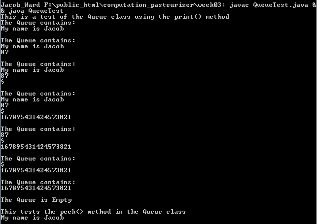

Week 3 Ex. 6: Rewrite the Queue class using composition, and write an appropriate test driver. First, test it with the "print" method. Then remove the print method and replace it with a "peek()
method that only returns the object at the top of the queue without removing it. Post the code for the final class which models the queue ADT.
Output:

Source Code:
public class Queue{
private List q;
public Queue () {
q = new List("The Queue");
}
public void enqueue (Object o) {
q.insertAtBack(o);
}
public Object dequeue (Object o) {
return q.removeFromFront();
}
public boolean isEmpty () {
return q.isEmpty();
}
public Object peek (){
if(isEmpty()){
return null;
}
return q.getFirstNode().getObject();
}
// Throw this class away before releasing the product
// It's very useful in coding up your class
public String print () {
return q.print();
}
//Test Driver for Queue class
import java.math.*;
public class QueueTest{
public static void main(String [] args){
String s1="My name is Jacob";
int i=87;
Character ch='$';
BigInteger bi= new BigInteger("167895431424573821");
Queue q = new Queue();
System.out.println("This is a test of the Queue class using the print() method");
q.enqueue(s1);
System.out.println(q.print());
q.enqueue(i);
System.out.println(q.print());
q.enqueue(ch);
System.out.println(q.print());
q.enqueue(bi);
System.out.println(q.print());
q.dequeue(s1);
System.out.println(q.print());
q.dequeue(i);
System.out.println(q.print());
q.dequeue(ch);
System.out.println(q.print());
q.dequeue(bi);
System.out.println(q.print());
System.out.println("This tests the peek() method in the Queue class");
q.enqueue(s1);
q.enqueue(i);
q.enqueue(ch);
q.enqueue(bi);
System.out.println(q.peek());
}
}